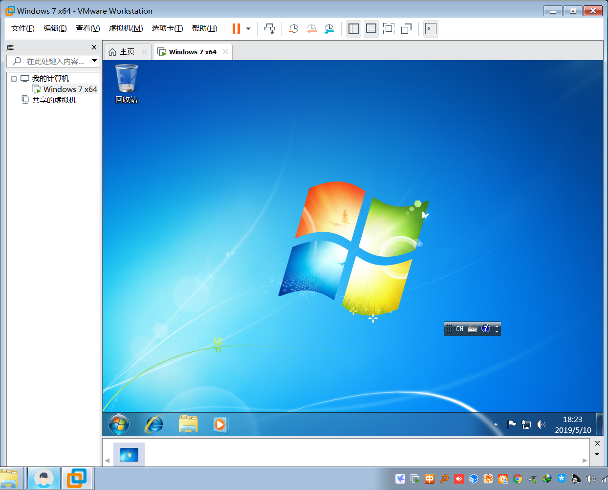
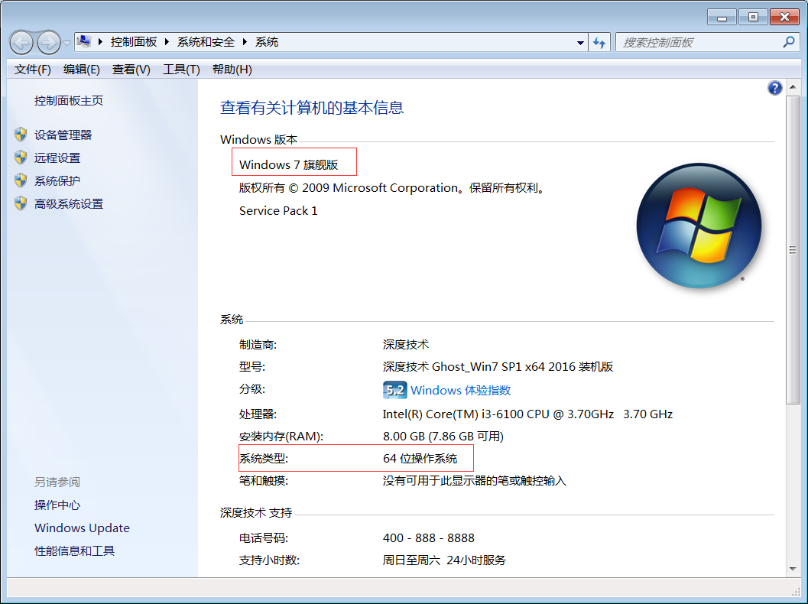
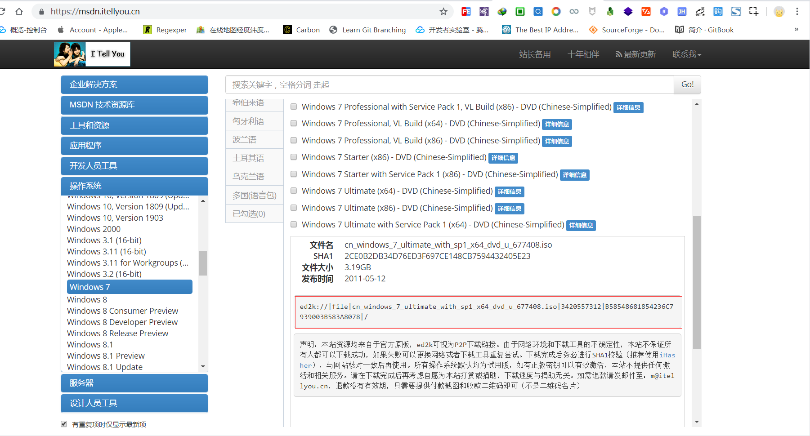
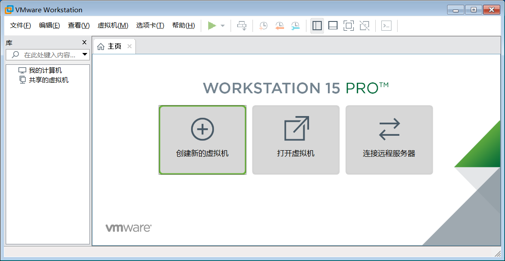
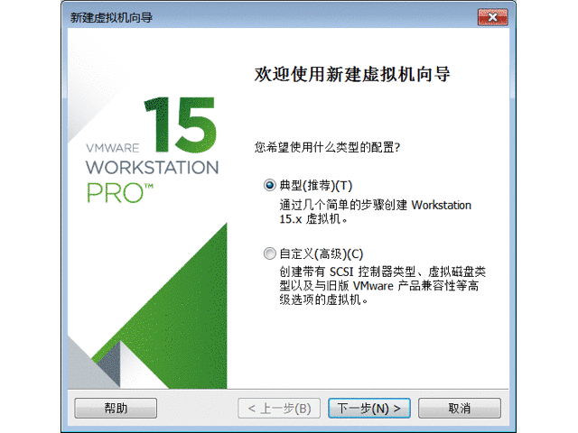
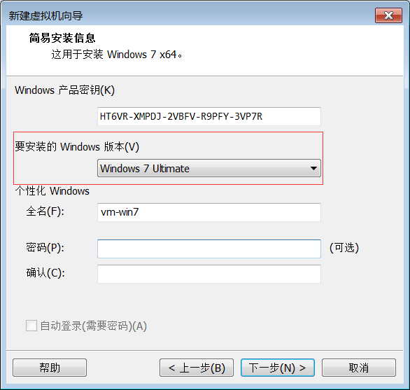
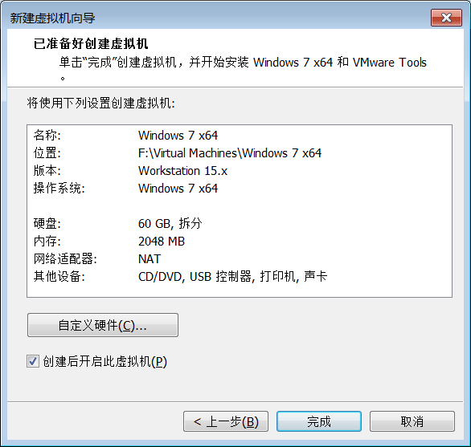
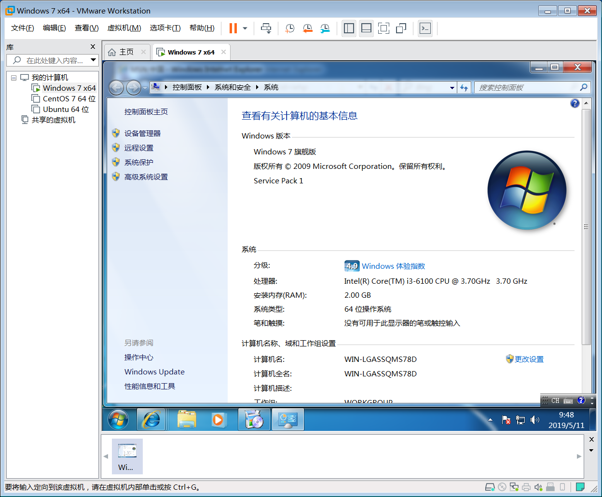

1. 给 windows 虚拟机装个 windows
前面我们已经介绍了如何在 Windows 宿主机安装 VMware 虚拟机,这节我们将利用安装好的 VMware 软件安装 Windows 系统.

1.1. 前情回顾
虚拟机是相对于真实的物理机而言的概念,是在我们当前正在使用的计算机基础上,通过软件或硬件的方式创造的新的计算机.
本文主要介绍的是 VMware 虚拟机,下载并安装 VMware 软件再安装操作系统即可模拟出另一台计算机的效果,这种模拟出来的计算机就是虚拟机.
VMware 不仅支持 Windows 也支持 Linux ,对于 Mac 系统也是支持的,如需了解 Mac 宿主机如何安装使用虚拟机,可以参考工具资源系列之给mac装个虚拟机.
Windows物理机如何安装虚拟机请参考 给 windows 装个 vmware 虚拟机
1.2. 下载镜像
VMware 为我们安装虚拟机提供了环境,真正的虚拟机到底是 Windows 系统还是 Linux 系统取决于我们要安装什么操作系统.
安装操作系统最简单便捷的方式就是下载操作系统的镜像文件,VMware 识别到镜像文件后就会一步一步安装操作系统.
所以我们第一步要做的就是寻找镜像文件,正所谓"知自知彼方能百战不殆",意味着首先要确定下我们到底要安装哪一个版本的操作系统?
Windows 操作系统有很多种,有 Win7 ,Win8 和 Win10 ,还有旗舰版和家庭版.
如果我们购买真实的计算机,那肯定要好好考虑一下,毕竟金钱要花的有价值,然而我们要安装的虚拟机,并不收费,这么多版本我们可以任意挑选安装!
如果有明确的目标,可以按照实际需求自行下载相应的操作系统; 如果没有明确的目标,不妨和我一样安装一个和本机相似的虚拟机,一来操作比较熟悉,而来可以在虚拟机进行任意实验.
所以,首先我要看一下本机的系统版本,因此我决定安装同款 Win7 旗舰版!

选择
我的电脑 > 右键属性 > 查看计算机的相关属性,我的电脑是Windows 7 旗舰版
现在已经明确了虚拟机的操作系统,那我们去哪里下载目标虚拟机的镜像文件呢?
这里推荐一下 https://msdn.itellyou.cn/ 网站,方便使用,好评!

Windows 7 Enterprise (x64) - DVD (Chinese-Simplified): 64 位企业版Windows 7 Enterprise (x86) - DVD (Chinese-Simplified): 32 位企业版Windows 7 Enterprise with Service Pack 1 (x64) - DVD (Chinese-Simplified): 64 位企业版且带有service package 1Windows 7 Enterprise with Service Pack 1 (x86) - DVD (Chinese-Simplified): 32 位企业版且带有service package 1Windows 7 Home Basic (x86) - DVD (Chinese-Simplified): 32 位家庭普通版Windows 7 Home Basic with Service Pack 1 (x86) - DVD (Chinese-Simplified): 32 位家庭普通版且带有service package 1Windows 7 Home Premium (x64) - DVD (Chinese-Simplified): 64 位家庭高级版Windows 7 Home Premium (x86) - DVD (Chinese-Simplified): 32 位家庭高级版Windows 7 Home Premium with Service Pack 1 (x64) - DVD (Chinese-Simplified): 64 位家庭高级版且带有service package 1Windows 7 Home Premium with Service Pack 1 (x86) - DVD (Chinese-Simplified): 32 位家庭高级版且带有service package 1Windows 7 Professional (x64) - DVD (Chinese-Simplified): 64 位专业版Windows 7 Professional (x86) - DVD (Chinese-Simplified): 32 位专业版Windows 7 Professional with Service Pack 1 (x64) - DVD (Chinese-Simplified): 64 位专业版且带有service package 1Windows 7 Professional with Service Pack 1 (x86) - DVD (Chinese-Simplified): 32 位专业版且带有service package 1Windows 7 Professional with Service Pack 1, VL Build (x64) - DVD (Chinese-Simplified): 64 位专业版且带有service package 1,并基于VL进行构建.Windows 7 Professional with Service Pack 1, VL Build (x86) - DVD (Chinese-Simplified): 32 位专业版且带有service package 1,并基于VL进行构建.Windows 7 Professional, VL Build (x64) - DVD (Chinese-Simplified): 64 位专业版并基于VL进行构建.Windows 7 Professional, VL Build (x86) - DVD (Chinese-Simplified): 32 位专业版并基于VL进行构建.Windows 7 Starter (x86) - DVD (Chinese-Simplified): 32 位初级版Windows 7 Starter with Service Pack 1 (x86) - DVD (Chinese-Simplified): 32 位初级版且带有service package 1Windows 7 Ultimate (x64) - DVD (Chinese-Simplified): 64 位旗舰版Windows 7 Ultimate (x86) - DVD (Chinese-Simplified): 32 位旗舰版Windows 7 Ultimate with Service Pack 1 (x64) - DVD (Chinese-Simplified): 64 位旗舰版且带有service package 1Windows 7 Ultimate with Service Pack 1 (x86) - DVD (Chinese-Simplified): 32 位旗舰版且带有service package 1Windows Automated Installation Kit for Windows 7 and Windows Server 2008 R2 (x86, x64, ia64) - DVD (Chinese-Simplified):Windows 7 and Windows Server 2008 R2 (x86, x64, ia64)自动安装包套件Windows Automated Installation Kit for Windows 7 and Windows Server 2008 R2 Service Pack 1 (x86, x64, ia64) - DVD (Chinese-Simplified):Windows 7 and Windows Server 2008 R2 Service Pack 1 (x86, x64, ia64)自动安装包套件
上述这么多的版本是不是让人有些眼花缭乱,具体版本之间有何差异以及自己适合哪一种请百度一下再理性分析!
以下以 64 位旗舰版且带有服务包操作系统为例进行演示,主要是创建一个和宿主机一样的操作环境,方便后续进行秘密实验!
cn_windows_7_ultimate_with_sp1_x64_dvd_u_677408.iso镜像文件,其中cn表示中文简体语言,Windows_7表示Win7操作系统,ultimate表示旗舰版,sp1表示service package 1,x64表示 64 位操作系统,dvd表示DVD安装方式,677408应该是版本号,.iso是镜像文件的后缀.
ed2k://|file|cn_windows_7_ultimate_with_sp1_x64_dvd_u_677408.iso|3420557312|B58548681854236C7939003B583A8078|/
由于镜像文件本身比较大,因此推荐使用专业的下载工具进行,这里使用的是迅雷下载磁力链接.
镜像文件:
cn_windows_7_ultimate_with_sp1_x64_dvd_u_677408.iso,其中后缀是.iso,千万不要解压! 不要解压! 不要解压!
1.3. 安装镜像
准备好已下载的镜像文件:
cn_windows_7_ultimate_x64_dvd_x15-66043.iso
打开 VMware 软件,选择 文件-> 创建新的虚拟机 或者在主页中选择 创建新的虚拟机 .

总体来说,安装过程比较简单,前面相关配置按照默认值即可,后面真正安装过程可能耗费时间比较长,耐心等待安装完成.

VMware 仅能识别出镜像文件基本信息,具体版本信息还是需要手动校准,下载的镜像文件是 Win7 旗舰版 ,因此安装版本也是 Win7 旗舰版 .

一系列安装配置完毕后,还有最后一步配置确认操作,确认无误后点击 完成 就可以真正进行安装虚拟机了!

安装过程中可能要求输入产品密钥以及设置用户,这些操作和新买计算机刚开机时操作一模一样,百度找一下相应版本的产品密钥即可,可以设置登录用户也可以不设置用户.
至此,安装成功!

安装虚拟机后,有啥秘密试验都可以在虚拟机上进行操作啦,再也不担心会不小心损坏物理机了呢!
1.4. 回忆总结
VMware 软件提供了虚拟机环境,差一个操作系统就能创建出虚拟机,而这种操作系统大部分是 .iso镜像文件.
镜像文件基本上至少 3g ,下载镜像文件也比较耗时,可以利用专业第三方下载工具进行下载.
虚拟机配置比较简单,采用推荐的默认值进行设置即可,除非你有特殊需求或者明白你正在设置的选项含义,否则不要随意更改推荐设置.
安装虚拟机中途可能会多次重启虚拟机,请耐心等待,不要中断安装操作,完成后自会完成!
如果觉得本文写的不错,欢迎点赞留言和转发哟!